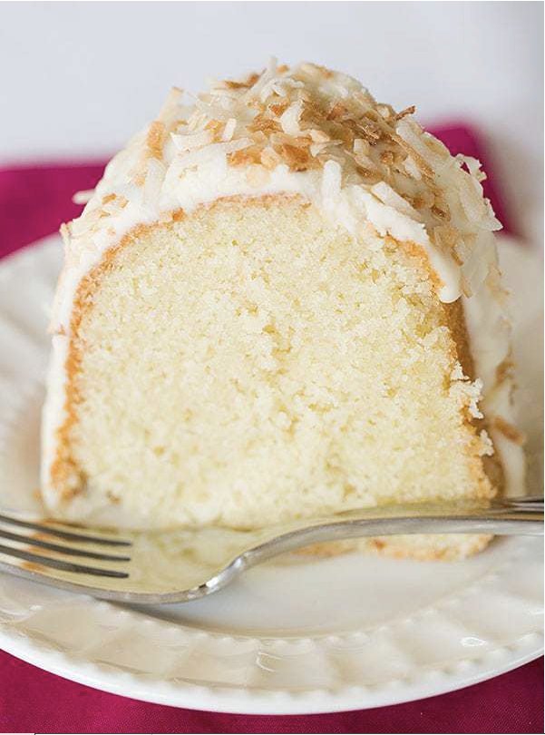

07/Jan
Coconut Bundt Cake with White Chocolate-Coconut Glaze
Last week flew by and before I knew it, it was time to plan the menu for Sunday dinner. Sundays have been a perfect opportunity for me to experiment with new dessert recipes, especially those that serve tons of people, since we have help polishing it all off and don’t have it sitting around the house, tempting us for days.

I love anything with coconut during the spring and summertime, and Bundt cakes are not only easy but they’re pretty and are perfect for serving a crowd. When I started flipping through a couple of my newer cookbooks and saw a recipe for a coconut Bundt cake, dessert was immediately decided.
I love that this can easily be mixed together in one bowl using my hand mixer; there's nothing
fussy about the mgredients or preparation, and it produces an absolutely perfect yellow cake. The layers are light
but sturdy: butteo.• and moist: and the ideal base for your very favorite chocolate frosting.
I used the chocolate frosting recipe from my ultimate chocolate cupcakes, and it was a wonderful
companion to this cake. The frosting is more buttery than sugary, satiny smooth and full of rich chocolate flavor.
It glides on like a dream!
This cake comes pretty darn close to a coconut pound cake, as there is quite a bit of butter,
sugar and eggs that help to create a wonderfully rich and moist cake. The coconut flavor is derived from a large amount of coconut
milk in both the cake and glaze, as well as a healthy dose of coconut extract. I also added toasted shredded coconut on top of the
glaze because, well, I feel like any type of coconut dessert needs to be topped with toasted coconut.
A couple of years ago, a coconut cake would have never ranked high on my list of cake options, but between the coconut cupcakes I
made last year and this cake, I am a total coconut convert.
Plus, after everyone went home yesterday, we were only left with two small pieces of cake. Win-win!